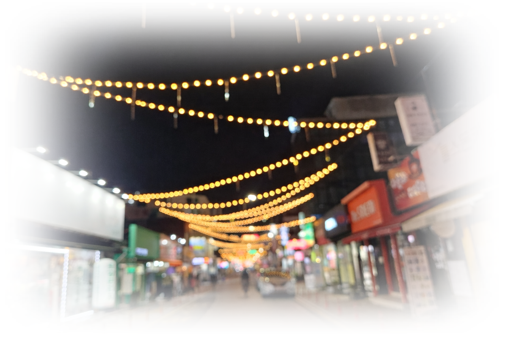
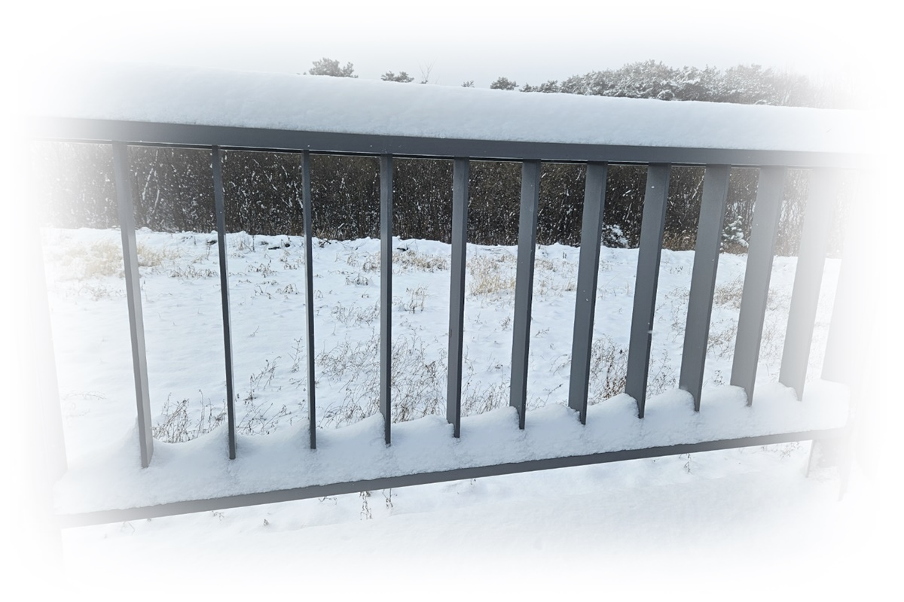

영유아 수면
영유아 수면
explainer
잠들기 어려운 아이의 밤, 훈련보다 공동조절이 먼저인 이유
영유아기의 수면은 습관 교정보다 애착과 공동조절의 관점에서 보는 편이 더 정확하다는 해설 기사입니다.
기사 보기
2026.04.23 · 4분
영유아 수면
영유아기의 수면은 습관 교정보다 애착과 공동조절의 관점에서 보는 편이 더 정확하다는 해설 기사입니다.
 청소년 리듬
청소년 리듬
 발달 현장
발달 현장

칼럼 · 회복 칼럼 · 불안과 잠
칼럼 · 불안과 잠

사례 기록해당 카테고리의 기사가 없습니다.
생애주기와 수면, 발달과 애착, 교육현장을 중심으로 다룹니다.
영유아기부터 성인기까지 발달 흐름 안에서 읽는 수면을 다룹니다.
애착, 공동조절, 사회학습을 현장의 언어로 풀어낸 기록을 모읍니다.
발달지연, 통합교육, 특수교육의 쟁점과 실제를 함께 다룹니다.
저서, 논문, 학위, 언론 보도 등 관련 기록을 한자리에서 확인할 수 있습니다.
저서, 논문, 학위, 언론 보도 등 관련 연구 기록을 한곳에서 확인할 수 있습니다.
운영의 기준이 되는 네 가지 원칙을 짧게 제시합니다.
단편적인 건강 정보보다 감정과 발달의 맥락을 먼저 설명합니다.
개인의 고통을 자기관리 실패처럼 다루지 않습니다.
현장의 언어를 공공의 문장으로 번역합니다.
사례는 철저히 익명화하며, 광고와 기사를 명확히 분리합니다.